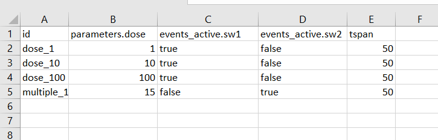
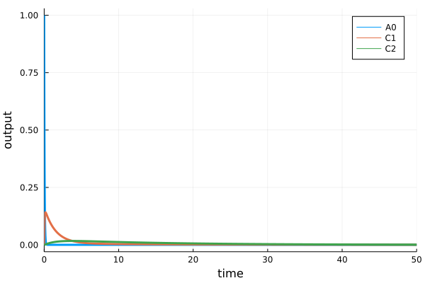
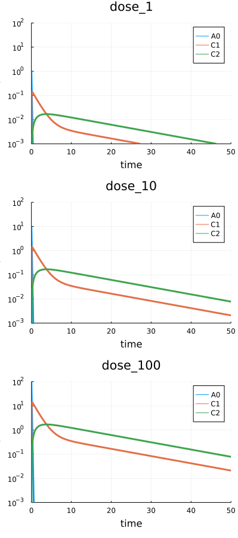

Scenario. Simulation
Working example
As an example we will use a model describing a simple two-compartment pharmacokinetic model stored in single .heta file. It is expected that the model code will be placed into "index.heta" file located in a directory my_example or something like that.
// Compartments
Vol0 @Compartment .= 1;
Vol1 @Compartment .= 6.3;
Vol2 @Compartment .= 10.6;
// Species
A0 @Species {compartment: Vol0, isAmount: true, output: true} .= 0;
C1 @Species {compartment: Vol1, output: true} .= 0;
C2 @Species {compartment: Vol2, output: true} .= 0;
// Reactions
v_abs @Reaction {actors: A0 = C1} := kabs * A0;
v_el @Reaction {actors: C1 =} := Vol1 * (kel * C1); // Vol1 * (kmax * C1 / (Km + C1));
v_distr @Reaction {actors: C1 = C2} := Q * (C1 - C2);
// Parameters
dose @Const = 20;
kabs @Const = 20;
kel @Const = 0.5;
Q @Const = 1.0;
// single dose event
sw1 @TimeSwitcher {start: 0};
A0 [sw1]= dose;
// multiple dose event, default off
sw2 @TimeSwitcher {start: 0, period: 24, active: false};
A0 [sw2]= dose;The modeling platform includes only one namespace nameless which is the default one. After loading into HetaSimulator the single Model with id :nameless will be available.
using HetaSimulator, Plots
# create Platform from the project files
# "index.heta" file inside is the default entry point
p = load_platform("./my_example");
# get the default model
model = models(p)[:nameless]No declaration file, running with defaults...
[info] Builder initialized in directory "Y:\my_example".
[info] Compilation of module "index.heta" of type "heta"...
[info] Reading module of type "heta" from file "Y:\my_example\index.heta"...
[info] Setting references in elements, total length 52
[info] Checking for circular references in Records.
[warn] Units checking skipped. To turn it on set "unitsCheck: true" in declaration.
[info] Checking unit's terms.
[warn] "Julia only" mode
[info] Exporting to "Y:\my_example\_julia" of format "Julia"...
Compilation OK!
Loading platform... OK!
Model containing 4 constants, 9 records, 2 switchers.
Use `constants(model)` to get the constants.
Use `records(model)` to get the records.
Use `switchers(model)` to get the switchers.
Use the following methods to get the default options:
- parameters(model)
- events_active(model)
- events_save(model)
- observables(model)Creating scenarios
Scenario in HetaSimulator is a type storing a model together with conditions and simulation settings like time-range, output variable, updated parameter values, activate or inactivate events, etc.
The scenario-based approach is used to store pre-defined model's options: dose values, experimental scenarios, data saving options, initial values and others which can be applied for one or multiple models. The Scenario also stores Measurement points which is used for parameters identification and visualization.
Scenario is created from default options passed from its model and user defined options from tables or set manually.
Manual creation of Scenario
Scenario objects can be created and loaded directly from Julia environment.
The minimal set of properties to create a scenario is the tspan or saveat arguments in Scenario constructor. The next code will create a Scenario for simulating the default model with time range from 0 to 10. The rest of options will be taken from default :nameless model:
- output records (observables) will be taken from records marked with
{output: true}in heta code. - all switchers (events) will be active if
{active: true}is not set. - constant values (parameters) will be the same as they stated in the heta file.
# minimal scenario
scenario0 = Scenario(model, tspan = (0, 10))Scenario for tspan=(0.0, 10.0)
tspan: (0.0, 10.0).
saveat: Float64[].
4 parameters. Use `parameters(scenario)` for details.
0 measurements. Use `measurements(scenario)` for details.The scenario can be simulated from the scenario and plotted.
res0 = sim(scenario0)
plot(res0)
Creating scenario we can also update some of the model default options. The next example is the case when we want to update the simulation conditions:
- Update value of constant
dose = 100. - Use multiple dose event
sw2instead of single dose. - simulation time is from
0to1000. - we need to observe all species:
C1,C2, and reactionsv_el.
The Scenario can be created with the following code:
# creating scenario
scenario1 = Scenario(
model,
parameters = [:dose=>100.],
events_active = [:sw1=>false, :sw2=>true],
tspan = (0.,50.),
observables = [:C1, :C2, :v_el]
)
res1 = sim(scenario1)
plot(res1)
To read more about available options see API docs for Scenario function.
It is necessary to mention that scenario0 and scenario1 after creation are not parts of p platform. To add them into storage we can use the following syntax.
# push all into `scenarios` dictionary
add_scenarios!(p, [:scn0 => scenario0, :scn1 => scenario1])where :scn0 and :scn are identifiers for the scenarios in the dictionary.
As it can be seen now the model include them.
Platform with 1 models, 2 scenarios, 0 measurements
Models: nameless. Use `models(platform)` for details.
Scenarios: scn1, scn0. Use `scenarios(platform)` for details.Import scenarios from CSV tables
The most simple way to populate a platform by scenarios is to create a file with Scenario in tabular CSV format.
Create file scenarios.csv file inside my_example with the following content.

The table can be created in Excel, saved as a CSV file and then loaded with the read_scenarios function as a DataFrame.
scenarios_df = read_scenarios("./my_example/scenarios.csv")4×4 DataFrame
Row │ id parameters.dose events_active.sw1 events_active.sw2
│ Symbol Int64 Bool Bool
─────┼────────────────────────────────────────────────────────────────────
1 │ dose_1 1 true false
2 │ dose_10 10 true false
3 │ dose_100 100 true false
4 │ multiple_15 15 false trueThe function reads the content of CSV file, checks components and stores in scenarios_df variable of DataFrame format. CSV files can be created with any other tools. User can also load tables from XLSX files using the same syntax.
The content of the DataFrame should be loaded into Platform object.
add_scenarios!(p, scenarios_df)As we can see all 4 scenarios from the table were added.
pPlatform with 1 models, 6 scenarios, 0 measurements
Models: nameless. Use `models(platform)` for details.
Scenarios: multiple_15, dose_1, dose_10, scn1, dose_100, scn0. Use `scenarios(platform)` for details.The particular scenario loaded directly into Platform can be obtained using the syntax.
scenario2 = scenarios(p)[:dose_1]Scenario for tspan=(0.0, 50.0)
tspan: (0.0, 50.0).
saveat: Float64[].
4 parameters. Use `parameters(scenario)` for details.
0 measurements. Use `measurements(scenario)` for details.See more about scenario tables in tabular CSV format.
Single scenario simulations
The base sim method is applied for a Scenario object. This object can be created directly using Scenario constructor or taken from Platform object.
The result of sim function execution is solution of ODE with parameters passed from (1) Model content and default settings, (2) settings passed from created Scenario object and (3) additional settings from sim function.
res2 = sim(scenario2)91x3 SimResults with status :Success.
Use `DataFrame(res)` to convert results to DataFrame.
Use `plot(res)` to plot results.sim method applied for a single Scenario returns object of type HetaSimulator.SimResults. The method has the additional arguments which can set the integration methods and other options. For more information see sim
The results can be visualized using plot recipe which create the default representation of SimResults content.
# plot all
plot(res2)
The figure displays all simulated points and all output variables declared in observables of the scenario. A user can select chosen observables for displaying. The other general plot arguments like yscale, ylim and others can be used.
# plot C1, C2
plot(res2, vars = [:C1, :C2])
The results can be transformed into DataFrame object for further modifications and saving.
# for all observables
res_df = DataFrame(res1)91×5 DataFrame
Row │ t A0 C1 C2 scope
│ Float64 Float64 Float64 Float64 Symbol
─────┼─────────────────────────────────────────────────────────────
1 │ 0.0 0.0 0.0 0.0 ode_
2 │ 0.0 1.0 0.0 0.0 sw1
⋮ │ ⋮ ⋮ ⋮ ⋮ ⋮
90 │ 48.7368 -3.03066e-34 0.00022778 0.000846342 ode_
91 │ 50.0 4.06546e-35 0.000208774 0.000775723 ode_
87 rows omittedAs in plot method the observables can be selected by the optional vars argument.
# for C1, C2
res_df = DataFrame(res1, vars = [:C1, :C2])To save the table into a file the CSV file format can be used.
using CSV
# save to file
CSV.write("export_df.csv", res_df)Multiple scenario simulations
There is an approach to simulate multiple conditions simultaneously. sim can be applied for all or selected Scenarios in a platform.
# all scenarios
res_mult = sim(p)Progress: 100%[==================================================] Time: 0:00:06
6-element Vector{Pair{Symbol, SimResults}}
:multiple_15 => 237x3 SimResults with status :Success.
:dose_1 => 91x3 SimResults with status :Success.
:dose_10 => 109x3 SimResults with status :Success.
:scn1 => 320x3 SimResults with status :Success.
:dose_100 => 132x3 SimResults with status :Success.
:scn0 => 83x3 SimResults with status :Success.
Use `DataFrame(sol)` to transform.
Use `plot(sol)` to plot results.The result of the method applied for a platform will be a vector of pairs Symbol identifier vs SimResults. To obtain the particular sim result a user can use numerical or symbol indexing.
# to get 2d result
res_mult[2][2]91x3 SimResults with status :Success.
Use `DataFrame(res)` to convert results to DataFrame.
Use `plot(res)` to plot results.# get results for multiple_15 Scenario
res_mult[:multiple_15][2]237x3 SimResults with status :Success.
Use `DataFrame(res)` to convert results to DataFrame.
Use `plot(res)` to plot results.To simulate the selected scenarios one can use scenarios argument.
res_selected = sim(p, scenarios = [:dose_1, :dose_10, :dose_100])The results of multiple simulations can be visualized all together using plot method.
# plot everything
plot(res_selected, yscale=:log10, ylims=(1e-3,1e2))
The generated figure includes all condition simulations titled with scenario identifier. The additional arguments as vars and plot options can be used as well.
sim results applied for multiple scenario can be translated into DataFrame.
# convert everything into DataFrame
res_selected_df = DataFrame(res_selected)
CSV.write("res_selected_df.csv", res_selected_df)Final remarks
The typical workflow for simulation of modeling platforms in HetaSimulator.jl consists of the following steps: (1) loading Heta-based models into a
Platformobject; (2) creating and addition scenarios usingScenarioconstructor or from CSV tables; (3) runsimmethod for the whole platform or for selected scenarios; (4) display results usingplotor transform intoDataFrame.ModelandScenarioobjects are "un-mutable". This means a user cannot update their parts directly. User can only create new Scenario and useadd_scenarios!method using the same identifiers. This replaces the previous scenarios with selected ids.To update a model structure one should include changes into source Heta-based model and repeat all the steps.
In many cased the chain Julia syntax can be useful. The following code creates the default scenario, simulate and plot with one line.
julia Scenario(models(p)[:nameless], tspan = (0,100)) |> sim |> plotplotmethod forSimResultsgives only a simple default representation. For extended graphics a user can transform everything into aDataFrameand plot manually.For multiple simulations of the Monte-Carlo type one should use
mcmethod instead ofsimmethod.Scenariois not the same as single simulation task in Monte-Carlo.